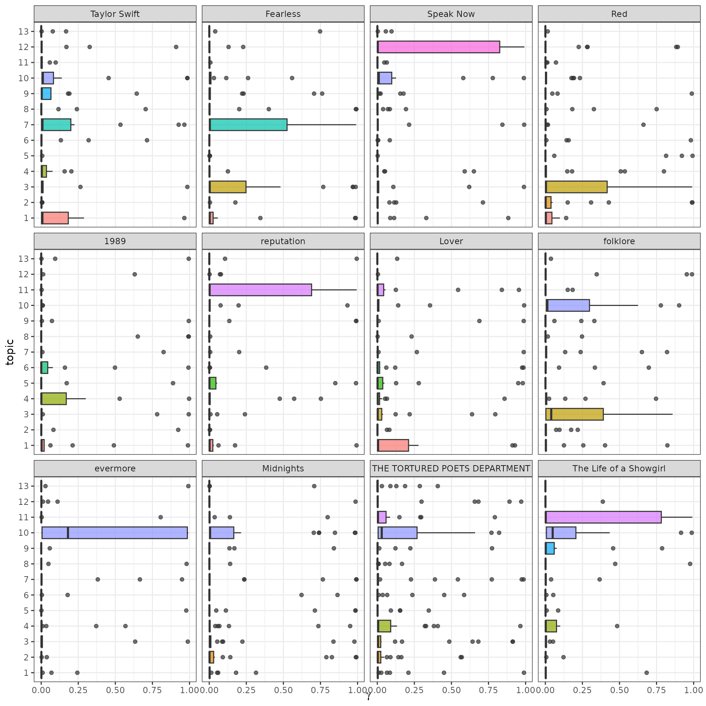

vignettes/articles/structual-topic-model.Rmd
structual-topic-model.RmdTopic modeling is a method for unsupervised classification of documents, as introduced in the previous vignette. The Structural Topic Model (STM) is an extension of topic modeling that allows you to include document-level covariates that can affect topic prevalence or content. In this vignette, we’ll show how to use tidy tools to fit an STM and interpret the results.
Our modeling goal is to “discover” topics in the lyrics of Taylor Swift songs. Instead of a supervised or predictive model where our observations have labels, this is an unsupervised approach.
library(dplyr)
library(tidyr)
library(stringr)
library(forcats)
library(ggplot2)
library(taylor)
glimpse(taylor_album_songs)## Rows: 332
## Columns: 26
## $ album_name <chr> "Taylor Swift", "Taylor Swift", "Taylor Swift", "T…
## $ ep <lgl> FALSE, FALSE, FALSE, FALSE, FALSE, FALSE, FALSE, F…
## $ album_release <date> 2006-10-24, 2006-10-24, 2006-10-24, 2006-10-24, 2…
## $ track_number <int> 1, 2, 3, 4, 5, 6, 7, 8, 9, 10, 11, 12, 13, 14, 15,…
## $ track_name <chr> "Tim McGraw", "Picture To Burn", "Teardrops On My …
## $ artist <chr> "Taylor Swift", "Taylor Swift", "Taylor Swift", "T…
## $ featuring <chr> NA, NA, NA, NA, NA, NA, NA, NA, NA, NA, NA, NA, NA…
## $ bonus_track <lgl> TRUE, TRUE, TRUE, TRUE, TRUE, TRUE, TRUE, TRUE, TR…
## $ promotional_release <date> NA, NA, NA, NA, NA, NA, NA, NA, NA, NA, NA, NA, N…
## $ single_release <date> 2006-06-19, 2008-02-03, 2007-02-19, NA, NA, NA, N…
## $ track_release <date> 2006-06-19, 2006-10-24, 2006-10-24, 2006-10-24, 2…
## $ danceability <dbl> 0.41, 0.43, 0.45, 0.48, 0.44, 0.44, 0.49, 0.48, 0.…
## $ energy <dbl> 0.35, 0.41, 0.32, 0.38, 0.35, 0.40, 0.36, 0.34, 0.…
## $ loudness <dbl> 0.22, 0.13, 0.25, 0.14, 0.21, 0.12, 0.15, 0.23, 0.…
## $ acousticness <dbl> 0.95, 0.91, 0.96, 0.94, 0.95, 0.93, 0.95, 0.95, 0.…
## $ instrumentalness <dbl> 0.75, 0.75, 0.76, 0.74, 0.75, 0.74, 0.74, 0.75, 0.…
## $ valence <dbl> 0.78, 0.80, 0.48, 0.79, 0.78, 0.50, 0.80, 0.50, 0.…
## $ tempo <dbl> 76.00, 105.47, 99.38, 114.84, 87.59, 112.35, 143.5…
## $ duration_ms <int> 232106, 173066, 203040, 199200, 239013, 207106, 24…
## $ explicit <lgl> FALSE, FALSE, FALSE, FALSE, FALSE, FALSE, FALSE, F…
## $ key <int> 0, 2, 5, 9, 0, 5, 4, 8, 2, 9, 9, 3, 7, 11, 10, 5, …
## $ mode <int> 1, 1, 0, 1, 1, 0, 1, 0, 1, 1, 1, 0, 1, 1, 0, 0, 1,…
## $ key_name <chr> "C", "D", "F", "A", "C", "F", "E", "G#", "D", "A",…
## $ mode_name <chr> "major", "major", "minor", "major", "major", "mino…
## $ key_mode <chr> "C major", "D major", "F minor", "A major", "C maj…
## $ lyrics <list> [<tbl_df[55 x 4]>], [<tbl_df[33 x 4]>], [<tbl_df[…Notice that the lyrics variable contains nested tibbles with the texts of the songs; we’ll need to unnest these:
library(tidytext)
tidy_taylor <-
taylor_album_songs |>
# remove Taylor's Version songs to avoid duplicates:
filter(!str_detect(album_name, "Taylor's Version")) |>
unnest(lyrics) |>
unnest_tokens(word, lyric)
tidy_taylor## # A tibble: 82,153 × 29
## album_name ep album_release track_number track_name artist featuring
## <chr> <lgl> <date> <int> <chr> <chr> <chr>
## 1 Taylor Swift FALSE 2006-10-24 1 Tim McGraw Taylor Sw… NA
## 2 Taylor Swift FALSE 2006-10-24 1 Tim McGraw Taylor Sw… NA
## 3 Taylor Swift FALSE 2006-10-24 1 Tim McGraw Taylor Sw… NA
## 4 Taylor Swift FALSE 2006-10-24 1 Tim McGraw Taylor Sw… NA
## 5 Taylor Swift FALSE 2006-10-24 1 Tim McGraw Taylor Sw… NA
## 6 Taylor Swift FALSE 2006-10-24 1 Tim McGraw Taylor Sw… NA
## 7 Taylor Swift FALSE 2006-10-24 1 Tim McGraw Taylor Sw… NA
## 8 Taylor Swift FALSE 2006-10-24 1 Tim McGraw Taylor Sw… NA
## 9 Taylor Swift FALSE 2006-10-24 1 Tim McGraw Taylor Sw… NA
## 10 Taylor Swift FALSE 2006-10-24 1 Tim McGraw Taylor Sw… NA
## # ℹ 82,143 more rows
## # ℹ 22 more variables: bonus_track <lgl>, promotional_release <date>,
## # single_release <date>, track_release <date>, danceability <dbl>,
## # energy <dbl>, loudness <dbl>, acousticness <dbl>, instrumentalness <dbl>,
## # valence <dbl>, tempo <dbl>, duration_ms <int>, explicit <lgl>, key <int>,
## # mode <int>, key_name <chr>, mode_name <chr>, key_mode <chr>, line <int>,
## # element <chr>, element_artist <chr>, word <chr>To train a topic model with the stm package, we need to create a sparse matrix from our tidy tibble of tokens. Let’s treat each Taylor Swift song as a document, and throw out words used three or fewer times in a song.
lyrics_sparse <-
tidy_taylor |>
count(track_name, word) |>
filter(n > 3) |>
cast_sparse(track_name, word, n)
dim(lyrics_sparse)## [1] 225 936This means there are 225 songs (i.e. documents) and 936 different tokens (i.e. terms or words) in our dataset for modeling. Notice that I did not remove stop words here. You typically don’t want to remove stop words before building topic models but we will need to keep in mind that the highest probability words will look mostly the same from each topic.
A topic model like this one models:
The most important parameter when training a topic modeling is
K, the number of topics. This is like k in
k-means in that it is a hyperparamter of the model and we must choose
this value ahead of time. We could try multiple
different values to find the best value for K, but
since this is Taylor Swift, let’s use K = 13.
One of the benefits of using the stm package is that we can include
document-level covariates, for example in the prior for topic
prevalence. To do this, we use the prevalence argument to
specify a formula for how topic prevalence should be modeled as a
function of our covariates. In this case, we’ll use
album_name as a covariate.
library(stm)
set.seed(123)
topic_model <- stm(
lyrics_sparse,
K = 13,
prevalence = ~album_name,
data = tidy_taylor |> distinct(track_name, album_name),
verbose = FALSE
)To get a quick view of the results, we can use
summary().
summary(topic_model)## A topic model with 13 topics, 225 documents and a 936 word dictionary.## Topic 1 Top Words:
## Highest Prob: oh, you, my, i, the, me, no
## FREX: oh, no, finally, usin, clean, rest, come
## Lift: faces, lovin, am, finally, cuts, death, thousand
## Score: oh, no, finally, come, breaks, clean, usin
## Topic 2 Top Words:
## Highest Prob: was, you, like, the, a, it, all
## FREX: him, snow, beach, red, was, down, too
## Lift: midnight, beach, flying, snow, him, lock, palm
## Score: red, snow, him, beach, tryin, fuck, was
## Topic 3 Top Words:
## Highest Prob: i, you, and, the, my, to, me
## FREX: trouble, places, london, wish, knew, losing, bless
## Lift: december, shoulda, fancy, slope, start, under, tolerate
## Score: wish, places, trouble, almost, knew, losing, follow
## Topic 4 Top Words:
## Highest Prob: the, we, in, of, and, a, were
## FREX: woods, clear, car, getaway, starlight, street, were
## Lift: ready, ridin, bring, pretenders, careful, careless, daughter
## Score: clear, woods, yet, we, out, car, getaway
## Topic 5 Top Words:
## Highest Prob: ooh, you, i, and, the, me, ah
## FREX: ooh, you'll, ah, ha, once, whoa, 22
## Lift: 22, bought, count, infidelity, keeping, everyone's, humming
## Score: ooh, dorothea, you'll, ha, getting, ah, once
## Topic 6 Top Words:
## Highest Prob: love, a, and, i, you, be, the
## FREX: beautiful, love, we've, florida, man, fallin, hands
## Lift: cut, em, we've, worship, goin, how'd, plane
## Score: we've, love, affair, beautiful, man, florida, blood
## Topic 7 Top Words:
## Highest Prob: you, and, the, i, a, me, to
## FREX: karma, smile, jump, karma's, take, belong, la
## Lift: boyfriend, okay, ours, ba, lately, ex, insane
## Score: karma, la, everybody, smile, times, knows, karma's
## Topic 8 Top Words:
## Highest Prob: you, and, i, oh, it, the, eh
## FREX: eh, rains, forever, how, wonderland, girl, anyway
## Lift: invitation, crashing, works, shouldn't, lucky, wonderland, alive
## Score: eh, rains, wonderland, forever, how, works, anyway
## Topic 9 Top Words:
## Highest Prob: to, you, the, i, been, me, and
## FREX: york, welcome, been, new, have, nice, will
## Lift: without, sing, both, quite, alchemy, honestly, reserved
## Score: york, welcome, new, nice, soundtrack, stay, hold
## Topic 10 Top Words:
## Highest Prob: i, the, you, and, your, in, my
## FREX: daylight, now, happiness, he's, reputation, fate, ophelia
## Lift: shimmer, daylight, team, told, betty, party, showed
## Score: daylight, he's, people's, game, wanna, drew, happiness
## Topic 11 Top Words:
## Highest Prob: you, i, it, the, me, what, want
## FREX: call, isn't, different, hits, gorgeous, delicate, want
## Lift: road, taken, face, turns, broken, caught, pieces
## Score: call, isn't, want, baby's, what, look, gorgeous
## Topic 12 Top Words:
## Highest Prob: you, i, and, the, be, gonna, this
## FREX: grow, gonna, who's, asking, come, meet, i'll
## Lift: guiding, enchanted, spend, wonderstruck, movie, someday, top
## Score: gonna, grow, who's, asking, come, why, last
## Topic 13 Top Words:
## Highest Prob: i, it, di, shake, can't, and, off
## FREX: di, shake, da, off, can't, play, fake
## Lift: stephen, felt, crime, lettin, until, why's, play
## Score: di, shake, off, da, fake, mmm, helpNotice that we do in fact have fairly uninteresting and common words as the most common for all the topics. This is because we did not remove stopwords.
If you do find that for your analysis it is important to remove stopwords, you will need to make sure that the number of documents in your sparse matrix matches the number of rows in your covariate data. When you remove stopwords, some documents may become empty and get dropped from your document-term matrix, causing a mismatch with your covariate data. In such a case, you can create a covariate dataframe that only includes documents present in the sparse matrix.
To explore more deeply, we can tidy() the topic model
results to get a dataframe that we can compute on. If we did
tidy(topic_model) that would give us the matrix of
topic-word probabilities, i.e. the highest probability words from each
topic. This is the boring one that is mostly common words like “you” and
“me”.
We can alternatively use other metrics for identifying important words, like FREX (high frequency and high exclusivity) or lift:
tidy(topic_model, matrix = "lift")## # A tibble: 12,168 × 2
## topic term
## <int> <chr>
## 1 1 faces
## 2 1 lovin
## 3 1 am
## 4 1 finally
## 5 1 cuts
## 6 1 death
## 7 1 thousand
## 8 1 blame
## 9 1 doesn't
## 10 1 rest
## # ℹ 12,158 more rowsThis returns a ranked set of words (not the underlying metrics themselves) and gives us a much clearer idea of what makes each topic unique! What are the highest lift words for topic 10?
## # A tibble: 936 × 2
## topic term
## <int> <chr>
## 1 10 shimmer
## 2 10 daylight
## 3 10 team
## 4 10 told
## 5 10 betty
## 6 10 party
## 7 10 showed
## 8 10 closure
## 9 10 sun
## 10 10 after
## # ℹ 926 more rowsWe also can use tidy() to get the matrix of
document-topic probabilities. For this, we need to pass in the
document_names:
How are these topics related to Taylor Swift’s eras (i.e. albums)?
lyrics_gamma |>
left_join(
taylor_album_songs |>
select(album_name, document = track_name) |>
mutate(album_name = fct_inorder(album_name))
) |>
mutate(topic = factor(topic)) |>
ggplot(aes(gamma, topic, fill = topic)) +
geom_boxplot(alpha = 0.7, show.legend = FALSE) +
facet_wrap(vars(album_name)) +
labs(x = expression(gamma))